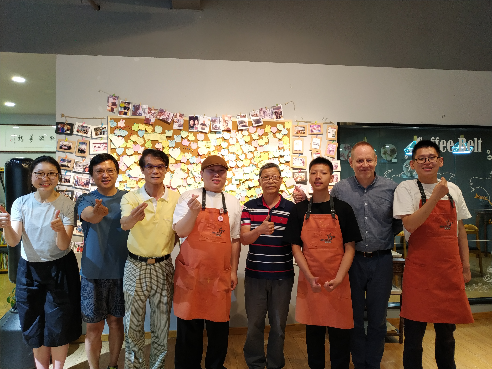
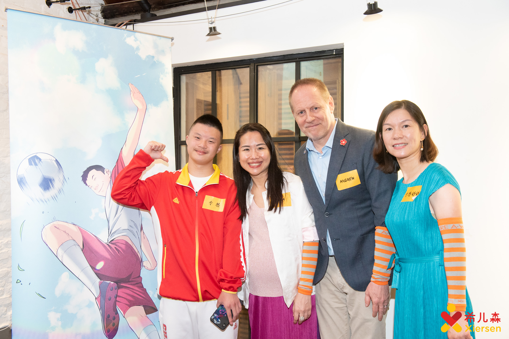

美国
学建 & 希尔森创始人兼董事
安德鲁于2006年他与其他合伙人共同创立学建。2010年荣获上海慈善之星。2015年创办非营利机构希儿森。他被国际扶轮社选为该组织在中国的特别代表。

“在过去的几年时间里，我很高兴成为TEC社群的一员。我们与TEC的合作包括开展支持有特殊需要的成人和儿童的项目，并通过在活动和其他项目中提升更多的对特殊人群的意识和包容性，来拉近我们与上海的距离。TEC为我们机构联结了很多领袖和当地的支持，他们的支持对完成我们的使命起到了非常大的帮助。期待我们将来也继续紧密合作。”
